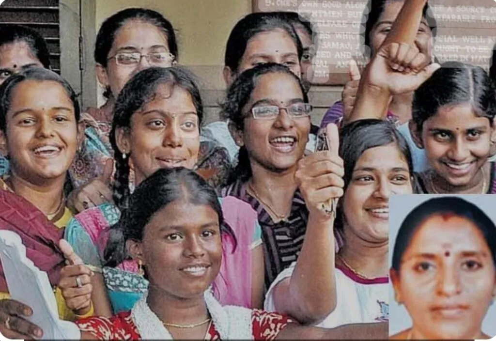
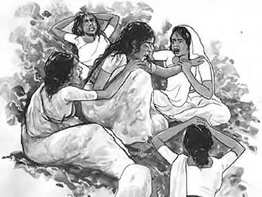
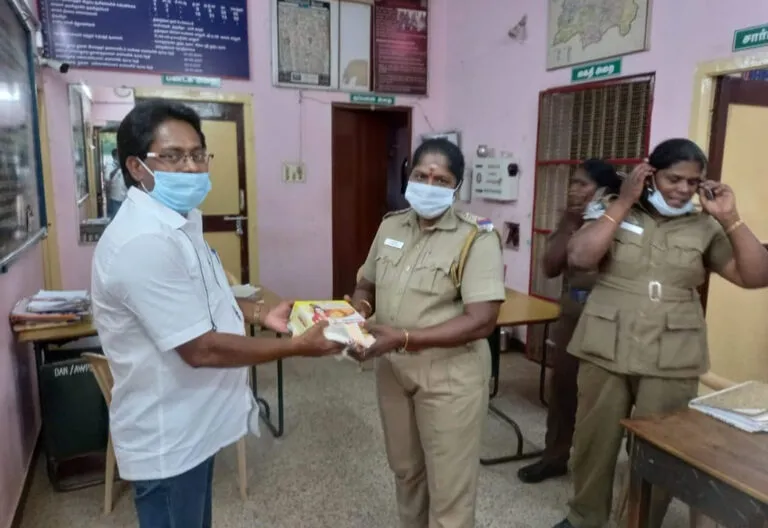

சிறார்கள் மற்றும் பெண், குழந்தைகள் பாதுகாப்பு
SIHRSJO- தென்னிந்திய மனித உரிமைகள் மற்றும் சமூக நீதி அமைப்பின் மூலம் குழந்தை தொழிலாளர் முறையை ஒழித்தல், பெண், குழந்தைகள் பாலியல் பாதுகாப்பு, மத சார்பற்ற கல்வி அனைவருக்கும் கிடைக்கவும், பெண் கொடுமை, உரிமை மீறல்கள் குறித்து விழிப்புணர்வு,
Protection of minors and women, children
SIHRSJO- South Indian Human Rights and Social Justice Organisation, Abolition of Child Labour, Women and Child Sexual Protection, Secular Education for All, Awareness on Violence against Women, Rights Violations,


ஆதரவு அற்றவர்களின் தன்னம்பிக்கை மேம்படுத்துவது
SIHRSJO- தென்னிந்திய மனித உரிமைகள் மற்றும் சமூக நீதி அமைப்பின் சார்பாக ஜாதி மதம் இனம் மொழி என இருந்தாலும் பாகுபாடு இல்லாமல் சமூக பாதுகாப்பு சேவையை வழங்கும் விதமாக அனைத்து தரப்பினருக்கும். முதியோர், ஆதரவற்ற குழந்தைகள், மாற்று திறனாளிகள், கணவனால் கைவிடபட்ட பெண்களுக்கு வாழ்வுரிமை தொழில் அமைத்து கொடுக்கும் விதமாக திக்கற்ற வர்களை கண்டறிந்து அரசுக்கு பரிந்துரை செய்வது இதன்காரணமாக மனித இனக்கத்தை மேம்படுத்த தங்களால் இயன்ற அளவு முயற்சி செய்தல்.
Improving the self-confidence of the underprivileged.
SIHRSJO- On behalf of South Indian Human Rights and Social Justice Organization to provide social security services to all parties without discrimination of caste, religion, race, language. To identify and suggest to the government the people who are desperate to set up a right-to-life business for the elderly, helpless children, differently-abled, women abandoned by their husbands and therefore try their best to improve the human race.
குழந்தைகள் கல்வி கற்றல் அவசியம் குறித்து நடவடிக்கைகள்.
அனைத்து சிறார்களுக்கான கல்வி கற்றலின் அவசியம் குறித்து, நகரம், கிராமத்தில் விழிப்புணர்வு ஏற்படுத்துதல் அரசு துறைகளுக்கு எதிராக நடைபெறும் குற்றங்களை தடுத்து அரசு கவனத்தில் கொண்டு செல்வது.
Actions on the need for children's education and learning.
To create awareness in town and village about the need of education for all minors To prevent crimes against government departments and bring them to the attention of government.

மாநகரம், நகர பராமரிப்பு. அரசு துறையுடன் இணைந்து செயல்படுதல்.
நகர்ப்புறத் தூய்மை, சாலைப் பாதுகாப்பு மற்றும் பொதுமக்களின் நலன் தொடர்பான நடவடிக்கைகளில் அரசு துறைகளுடன் இணைந்து செயல்படுகிறோம்.
City, city maintenance. Collaborating with Govt.
SIHRSJO helps address urban cleanliness, sanitation, road facilities, street light maintenance and public safety concerns in collaboration with the relevant government departments.
விவசாயிகளின் வளர்ச்சியை கிராம புறங்களில் மேம்படுத்துவது.
SIHRSJO – தென்னிந்திய மனித உரிமைகள் மற்றும் சமூக நீதி அமைப்பின் சார்பாக கிராம புறங்களில் விவசாயிகளுக்கு வழங்கப்படும் ஊராட்சி ஒன்றிய அரசு, மாநில அரசின் திட்டங்கள் குறித்தும், ஏரிகள், குளங்கள், நீர் நிலைகள் மீட்பு, மரங்கள் அதிகமாக வளர்க்கவும் பாதுகாக்கவும், கால்நடை வளர்ப்பு, நாட்டுக்கோழி வளர்ப்பு, இவற்றால் கிடைக்கும் இயற்கை உரம், போன்ற விழிப்புணர்வு ஏற்படுத்துதல்.

To promote the development of farmers in rural areas.
SIHRSJO – On behalf of South Indian Human Rights and Social Justice Organization, to create awareness about the Panchayat Union Government and State Government schemes provided to the farmers in the rural areas, such as lakes, ponds, water level recovery, more trees to grow and protect, animal husbandry, domestic poultry farming, natural fertilizer available from these etc.

காவல் துறையினருடனும் தக்க தருணத்தில் உதவுவது.
SIHRSJO – தென்னிந்திய மனித உரிமைகள் மற்றும் சமூக நீதி அமைப்பின் சார்பாக மாவட்ட வாரியாக சமூக தன்னார்வ நடவடிக்கைகள் (Volunteer Activities Team) கொண்டு தீபாவளி, பொங்கல், ஜனவரி போன்ற நேரங்களில் சாலை கூட்ட நெரிசலில் போக்குவரத்து காவலர்களுக்கு உதவுதல், சாலை போக்குவரத்து விதிகளை பின்பற்ற வேண்டி விழிப்புணர்வு ஏற்படுத்துதல், மற்றும் திருவிழா போன்ற நேரங்களில் தேவைபடும் சமயத்தில் காவல் துறையினருக்கு உதவுவது.
Assisting with police department also at appropriate time.
SIHRSJO – South Indian Human Rights and Social Justice Organization on behalf of the District wise Community Volunteer Activities Team (Volunteer Activities Team) during Diwali, Pongal, January etc. to help the traffic police during traffic jams, create awareness to follow road traffic rules, and police when required during festivals. Assisting the Department.